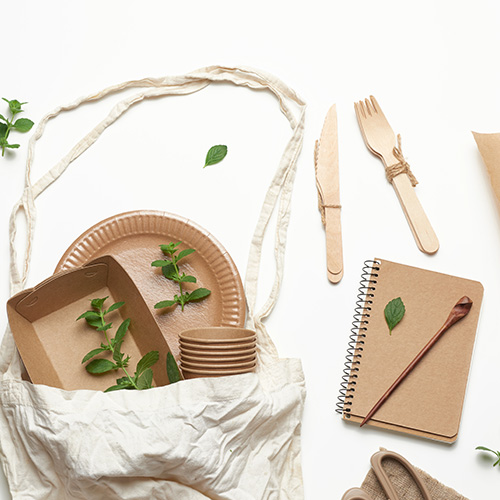

What Is Sustainable Packaging?
Sustainable packaging is any type of eco-friendly material used to wrap, store, ship or shelve products. Compostable packaging is an increasingly popular form of sustainable packaging. It protects food products similarly to regular packaging, displaying the properties and resilience of traditional materials, however it breaks down fully in the ground into beneficial organic compost.
What Is Sustainable Packaging Made Of?
Sustainable packaging is made from materials like recyclable PET or HDPE plastics, cardboard, and paper, which can be reprocessed into new items. It also includes compostable materials such as PLA (starch-based) and cellulose, which biodegrade in compost, offering an eco-friendly alternative to traditional plastics. These materials are used in a variety of applications, from food containers and cutlery to flexible packaging and products in fashion and cannabis industries, combining environmental benefits with performance.
Why Do We Need Sustainable Packaging?
Everyday packaging is wasteful, often made from non-renewable fossil fuels, while sustainable packaging uses recycled materials to conserve resources. Conventional packaging production involves toxic chemicals that harm human health, whereas sustainable alternatives minimize exposure by using safer materials. True sustainability also means reducing waste and utilizing renewable resources in manufacturing, which eco-conscious consumers support. Investing in green equipment and repurposing materials can save businesses money while appealing to Millennials who prioritize sustainability. Transparency is crucial—misleading claims can damage trust. With limited resources and shifting consumer values, adopting sustainable packaging is a simple yet powerful step toward a greener future.